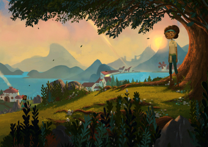
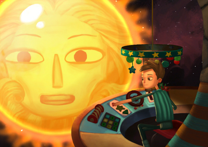
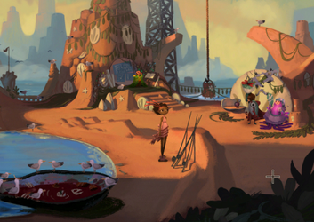
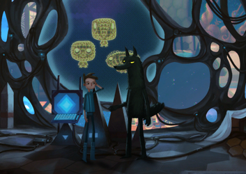
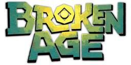

Broken Age
Dieser Artikel wurde für die folgenden Ubuntu-Versionen getestet:
Ubuntu 16.04 Xenial Xerus
Ubuntu 14.04 Trusty Tahr
Zum Verständnis dieses Artikels sind folgende Seiten hilfreich:
Broken Age  ist ein Point-and-Click-Adventure des Entwicklerstudios Double Fine Productions rund um Spieleentwickler Tim Schafer. Broken Age ist dabei in zwei Akte unterteilt. Der erste Akt kam im Januar 2014 heraus, der zweite Akt soll Ende 2014 folgen.
ist ein Point-and-Click-Adventure des Entwicklerstudios Double Fine Productions rund um Spieleentwickler Tim Schafer. Broken Age ist dabei in zwei Akte unterteilt. Der erste Akt kam im Januar 2014 heraus, der zweite Akt soll Ende 2014 folgen.
Im Spiel übernimmt man abwechselnd die Rolle des jungen Shay oder der jungen Vella, die beide ein völlig verschiedenes Leben führen und dennoch ein ähnliches Schicksal teilen: Beide sind eingesperrt und wollen entkommen.
|  |
| Für Vella beginnt kein guter Tag, da sie geopfert werden soll. |
|  |
| Der Computer passt auf, dass sich Shay in seinem Spielzeugraumschiff nicht verfliegt. |
Geschichte¶
Jeden Morgen wacht der junge Shay alleine auf seinem Raumschiff auf. Und jeden Morgen beginnt der gleiche Trott. Der mütterliche Schiffscomputer bereitet ihm das Frühstück zu, das, obwohl er aus 20 unterschiedlichen Müsli-Packungen wählen kann, doch immer gleich schmeckt. Danach darf sich Shay auf „gefährliche“ Rettungsmissionen begeben, die aber, wie er schon längst bemerkt hat, keine echte Missionen sind, sondern vom Computer simuliert werden.
Und so sehnt sich Shay danach, ein richtiges Abenteuer zu bestehen, bei dem er auch wirklich etwas Gutes tun kann. Da trifft es sich ganz gut, dass er plötzlich auf einen geheimnisvollen Wolf namens Marrek stößt, den er noch nie im Raumschiff gesehen hat. Marrek kann das Schiff zu anderen Planeten steuern, auf denen Shay bedrohte Lebewesen retten kann. Die Frage ist, ob Marrek wirklich die Wahrheit sagt, denn sehr oft weicht er Shays Fragen aus, sodass die Rettungsmissionen mit dem Wolf doch nur wieder wie ein sinnloses Spiel wirken.
Vellas Geschichte beginnt schlafend unter einem Baum an einem wunderschönen Tag. Könnte sie weiterschlafen, wäre alles noch viel schöner, denn der Tag verheißt nichts Gutes für sie. Auf dem Maidenmahl-Fest soll Vella dem Mog Chotra, einem riesigen Monster, geopfert werden. Ohne die Opferung würde der Mog Chotra Vellas Dorf angreifen und zerstören.
Doch Vella hat keine Lust zu sterben. Im Gegensatz zu den anderen jungen Frauen, die ebenfalls geopfert werden sollen, sieht sie es nicht als Ehre an, zu sterben, sondern hinterfragt, wieso man sich nicht gegen den Mog Chatra zur Wehr setzt. Und so findet Vella, kurz bevor der Mog Chatra sie fressen kann, einen Ausweg und landet in Wolkenheim, einem Ort über den Wolken. Findet sie von hier wieder einen Weg zurück, um ihr Dorf zu retten und den Mog Chatra zu besiegen?
|  |
| Am Strand von Muschelhöhe findet die Opferung für Mog Chatra statt. |
|  |
| Der geheimnisvolle Wolf Marrek nimmt Shay mit auf ein richtiges Abenteuer. |
Installation¶
Broken Age kann entweder über Steam gekauft, installiert und gestartet [4] werden oder man besorgt sich die DRM-freie Version aus dem Humble Store.
Nach dem Download des Spiels aus dem Humble Store muss man das Archiv nur entpacken [1] und die Datei BrokenAge im entpackten Ordner ausführen [2]. Alternativ kann man sich auch noch einen Menüeintrag anlegen [3].
Im entpackten Ordner des Spiels gibt es auch eine ReadMe.txt, die Antworten auf einige häufig gestellte Fragen gibt.
| Für Vella beginnt kein guter Tag, da sie geopfert werden soll. |
| Der Computer passt auf, dass sich Shay in seinem Spielzeugraumschiff nicht verfliegt. |
Konfiguration¶
Einstellungen¶
Die Einstellungen findet man im Hauptmenü nach dem Start des Spiels unter "Einstellungen". Hier kann u.a. die Grafikauflösung oder die Sprache eingestellt werden.
Sprache¶
Die Sprachausgabe des Spiels ist in Englisch, es gibt aber deutschsprachige Untertitel, die in den Einstellungen ausgewählt werden können. Daneben sind alle Dialogoptionen in Deutsch und auch alle In-Spiel-Grafiken wurden eingedeutscht.
Steuerung¶
Da es sich um ein Point-and-Click-Adventure handelt, werden die beiden Charaktere mit der Maus gesteuert.
Deinstallation¶
Da sich das Spiel nicht ins System installiert, muss man beim Humble-Kauf nur den entpackten Ordner löschen.

Infobox¶
| Broken Age | |
| Originaltitel: | Broken Age |
| Genre: | Adventure |
| Sprache: |     (Sprachausgabe nur ) (Sprachausgabe nur ) |
| Veröffentlichung: | 2014 (Linux) |
| Publisher: | Steam / Humble Store |
| Systemvoraussetzungen: | 1.7 GHz Dual Core / 2 GB Arbeitsspeicher / NVIDIA GeForce GTX 260, ATI Radeon 4870 HD, Intel HD 4000 oder Ähnliches |
| Medien: | Download |
| Strichcode / EAN / GTIN: | - |
| Läuft mit: | nativ |

- Erstellt mit Inyoka
-
 2004 – 2017 ubuntuusers.de • Einige Rechte vorbehalten
2004 – 2017 ubuntuusers.de • Einige Rechte vorbehalten
Lizenz • Kontakt • Datenschutz • Impressum • Serverstatus -
Serverhousing gespendet von